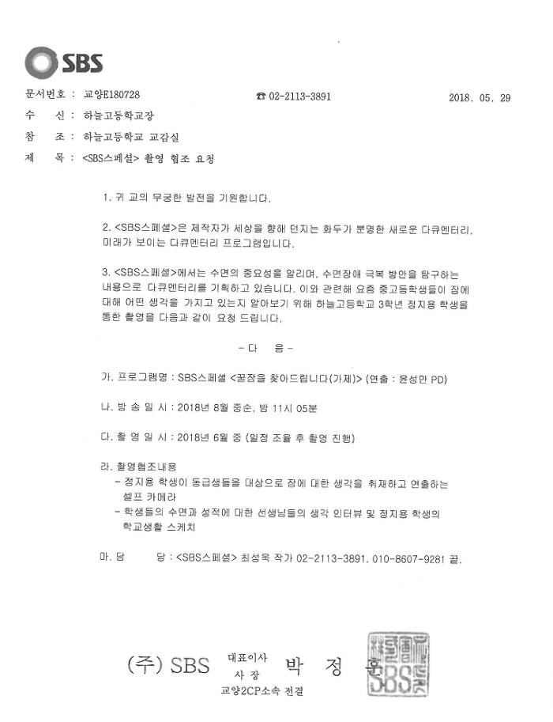

Written by
정지용
on
on
SBS 스폐셜 521회 청소년 파트 제작기
고등학교때 저는 기숙사 생활을 하였습니다.
한달에 한번씩 집을 갈 수 있는데 매일매일 친구들과 지내면 사소하지만 재미있는 일이 항상 생깁니다.
저는 이런 일상을 기록하기 시작했습니다.
마침 수능을 일년 앞둔 고삼들이기 때문에 잠을 주제로 해서 다큐멘터리를 만들기 시작했습니다.

친구들과 생활하는 일상생활을 찍은 제 다큐멘터리를 SBS 스폐셜팀에서 보시고 같이 다큐멘터리를 제작할 생각이 없냐고 연락이 오셨습니다.
그렇게 SBS 스폐셜 521화 ‘다시 쓰는 불면 일기’ 청소년 파트를 제작하게 되었습니다.

이번 작업을 하면서 청소년들의 수면시간이 많이 부족하다는 사실을 알게되었습니다.
무한경쟁사회에서 패자가 되지 않기 위해서 자신이 원하는 꿈을 이루기 위해서 모두가 잠과 힘겨운 싸움을 하고 있는 현실이 너무 안타까웠습니다.
제가 만든 부분이 일부 편집되어 나와 아쉬웠지만 정말 좋은 기회였습니다.
이런 좋은 기회를 주신 ‘SBS 스페셜’제작팀에서 감사의 인사드립니다.